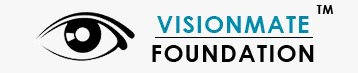

Apollo Hospital Mumbai is best hospital in Navi Mumbai which is one of the most
advanced
Multi-Speciality Quaternary Care hospitals. The hospital offers comprehensive and integrated super
specialty
services under one roof. Apollo Hospitals is the best hospital in Navi Mumbai because of a team of
renowned
expert consultants to provide people easy access to advanced technologies for precise diagnosis and
treatment.
The facility is accredited by Joint Commission International (JCI). It also provides advanced
personalized
health check programs which are tailor-made to individuals’ lifestyle requirements.
Mahatma Gandhi Mission(MGM) is one of the most advanced multispecialty tertiary care
centres
in the heart of NaviMumbai in India.Since 1993,the hospital has experienced rapid growth to become a key
player
in the healthcare sector of this up-coming satellite city.Its a technologically advanced institution
designed to
international standards and most stringent criteria in infrastructure,medical care,fire-safety
norms,environmental guidelines because every element that comprises the hospital’s making,from the
premises,to it's
professionals,contributes to the overriding principle: Respect for patient & their families.
Kokilaben Dhirubhai Ambani Hospital,a super specialty care hospital in Navi
Mumbai, is a proud milestone and towards commitment to quality healthcare.A hospital's first and
foremost
job is to heal people and save them from future harm.Here they
take innumerable steps to create a safe and healthy environment for patients.They aim to provide
patients
with the highest quality of treatment and the utmost level of safety.Safety and quality here is the
mandate of the Department of Clinical Quality and aim to deliver
complete safety involves doctors, nurses, therapists, patients and their families.The staff at KDAH
,follows international protocols to ensure patient safety.
Visionmate Organisation

VisionMate Foundation is a Not for Profit organization aimed at automation of Eye Donation
Campaigning Process resulting in building a Eye Donor Registry and funding of Eye Transplant Surgeries.
We are adopting a technology based approach to reach out to the people by automating the campaign and
donor registration processes. The current methods at large have the donor’s online registration
processes but have not used any software platform to automate the campaigning processes.
Mission for Vision(MFV) is among the larger NGOs working to eradicate
avoidable blindness across the country. It does so by enabling high-quality, comprehensive eye care to
the most disadvantaged communities; human resource development; research; and policy engagement in
India, Nigeria, and Bhutan.Blindness is largely a consequence of poverty and people with visual impairment are more
likely to become economically challenged if eye care is inaccessible.The certainty that eradicating
avoidable blindness enhances productivity and leads to social and economic equality powered MFV to
provide the underprivileged communities with access to the right treatment at the right time.